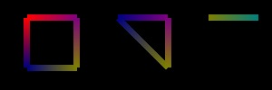

size(300, 100, P3D); background(0); strokeWeight(7); noFill(); beginShape(); stroke(255,0,0);vertex(30, 20); stroke(128,0,128);vertex(85, 20); stroke(128,128,0);vertex(85, 75); stroke(0,0,128);vertex(30, 75); endShape(CLOSE); beginShape(); stroke(0,0,128);vertex(130, 20); stroke(128,0,128);vertex(185, 20); stroke(128,128,0);vertex(185, 75); endShape(CLOSE); beginShape(); stroke(128,128,0);vertex(230, 20); stroke(0,128,128);vertex(285, 20); endShape(CLOSE); beginShape(); stroke(128,128,128);vertex(330, 20); endShape(CLOSE);